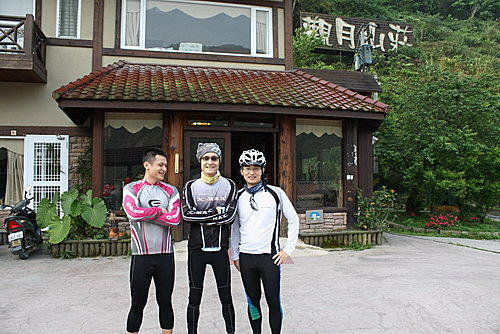
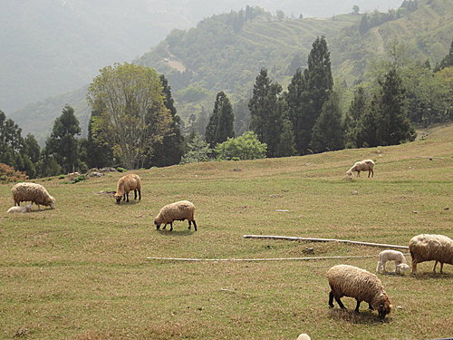

行程概要：中橫之行的第二天，為此次行程的重頭戲，也是最硬、最壯烈的一段旅程，上午行程由廬山觀月溫泉山莊霧社－清境農場－中午抵達梅峰農場享用中餐。
要離開飯店前，身穿河東獅車衣的俊男美女們來個大合照 

不合群遭排擠的三人，也要來留影一下。ㄟ！小益！照相要看鏡頭喔
出發：
依照昨天大家的共識，台14甲霧社到廬山觀月溫泉山莊之間約8公里的路程昨天騎過，今天不再重騎，約8點左右，肉粽大ㄟ連車帶人載著我們離開觀月山莊，沿途為幫大家節省體力，在小紀隊長、阿山哥、莉莉等層層把關、嚴格挑選，終於擇定台14縣道靠近台14甲縣道的一處空地，卸車整裝，準備開始今日的行程。
這整裝出發的地點，可是阿山哥、小紀隊長及莉莉精心挑選的
霧社－清靜：
一彎進台14甲就遇到約莫3公里的極陡坡，似乎預告著今日路程的嚴峻，剛開始前2個彎還能見到莉莉跟貓哥的背影，但過了第3個彎就再也看不見他倆了，我們成員在此一分為二，由貓哥、莉莉成主集團，其餘包括我在內則為次集團成員。
只有一出發時，才看得到貓哥、莉莉的背影，很珍貴請再多看幾眼吧！
小鍾：無論任何險惡環境，我們都要開朗樂觀以對
過了前3公里較陡的坡後，之後的路坡度較平緩，騎乘起來還算游刃有餘，但沿途有許多轎車、遊覽車經過，排放大量廢氣，如何『節能減碳』（即節省體能，及減少吸入一氧化碳）才是一大挑戰，還好清境農場附近林立的仿歐洲莊園古堡式民宿，多少分散一些不適的注意力。
清境7-11門市入口處歐式風車
小紀隊長一派輕鬆抵達清境7-11門市前停車場，似乎覺得剛才坡度太EASY了
大約10點左右，次集團全員抵達第一個集合站『清境農場的星巴克廣場』，在此同時主集團的貓哥因記錯地點騎過了頭，往海拔更高的7-11等我們，至於莉莉也更早已悠哉地品嚐完一杯星巴客咖啡並幽雅的拍完照了，在此團員休息約20分鐘，享用肉粽大ㄟ準備的香蕉等食物、補給水、運動飲料、上廁所、照相，約10點20分左右，繼續往下一個站 『梅峰農場』出發。
一離開7-11清境門市，又是一望無際的陡坡，往上騎了約1公里著名的青青草原開始映入眼簾，中橫路段美麗的風景就此展開來，大片的翠綠草原及可愛成群的綿羊，讓人暫時忘卻爬坡的苦痛，但這陡坡綿延不絕，讓大家吃足苦頭，一直到青青草原收票口的停車場才見久違的平緩

在接近草原停車場時，一位修路工人，見我們次集團的幾位男士上氣不接下氣，掙扎地龜速前進，非但無一絲一毫地憐憫心，竟還譏笑我們說：『剛剛有一位小姐早就騎上去了（指莉莉啦），而且還騎小折，你們這些男生騎登山車，竟然騎輸一個女生，太丟臉了』，被他這麼一激，我們都使出吃奶的力氣，騎乘時速至少多了3公里，所幸不一會兒就抵達停車場的平緩地，大夥小憩片刻，悠閒地就近欣賞綿羊、照相。
中橫路段海拔最高7-11門市
過了青青草原之後的路坡度雖然稍緩，然時近中午，日正當中，兩旁多是民宅，無樹蔭遮蔽，因此體力快速地流失，我也越騎越後面，幾度殿後，過了痛苦漫長的時間，來到中橫路段海拔最高的7-11門市，見肉粽大ㄟ將補給車停放在旁邊的停車場，並且幫我們添購幾瓶蠻牛，我不加思索地灌了一瓶蠻牛，冀望能像廣告一般立即見效，說也奇怪，不知道心理作用還是真有用，喝完約10分鐘，再騎時，感覺腳踏變輕快了
再往上騎沒多久，到海拔約2100左右，兩旁的民宅變少了，取而代之的是高聳筆直的茂密的溫帶林、湛藍無暇的天空及潔白的雲朵，這些美景近到好像伸手就摸的到似地，也因為多了樹蔭，少了陽光直射，開始覺得幾分涼意，甚至在背陽面時還會冷到發抖，大家紛紛穿起防風外套。這時車輛也變少了，少了汽車排放的廢氣，空氣吸起來是潔淨並帶有濃郁的芬多精味，多吸幾口心曠神怡，精神抖擻，加上坡度平緩，這一段路個人覺得是全程騎乘起來最舒服的的路段，再騎20分鐘左右，終於抵達海拔約2100公尺-梅峰農場。（待續）